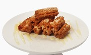
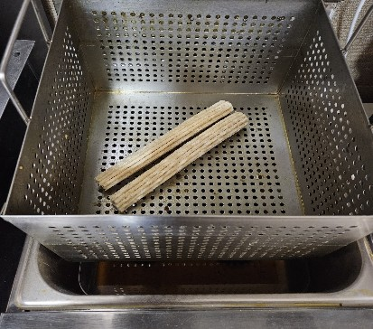
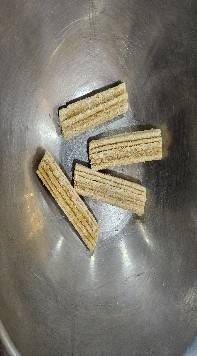
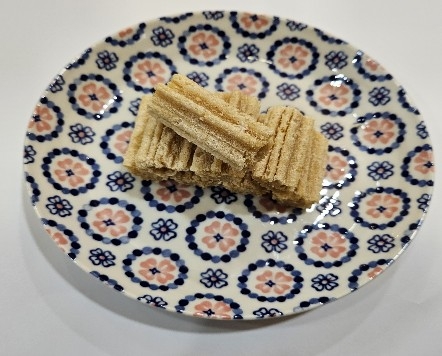
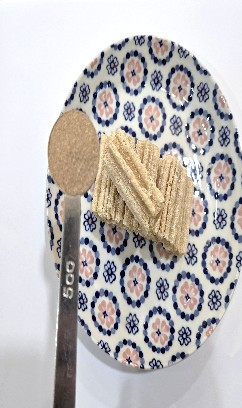
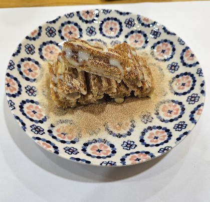
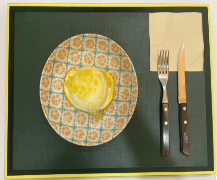

| 메뉴명 | 투니랜드 츄러스 |
|---|---|
| 판매가격 | 3,900원 |
| 원재료 | 츄러스, 시나몬슈가, 연유 |
| 사용 부자재 | 덮밥접시, 포크, 나이프 |
| 메뉴특징 | 겉은 바삭! 속은 쫄깃! 연유 듬뿍 놀이동산 츄러스 메뉴 |






토핑 추가 시
· 휘핑크림 : 접시 한쪽에 휘핑크림 3바퀴(20g)를 짜거나, 소스볼에 담아서 제공
· 아이스크림 : 접시 한쪽에 아이스크림 1스쿱 올려 제공
· 초코쉘 : 아이스크림을 함께 추가했을 경우 가능. 아이스크림 위에 초코쉘 20g 드리즐하여 제공
(※초코쉘 사용 전, 충분히 흔들어 코코넛오일을 섞어준 뒤 뿌릴 것)